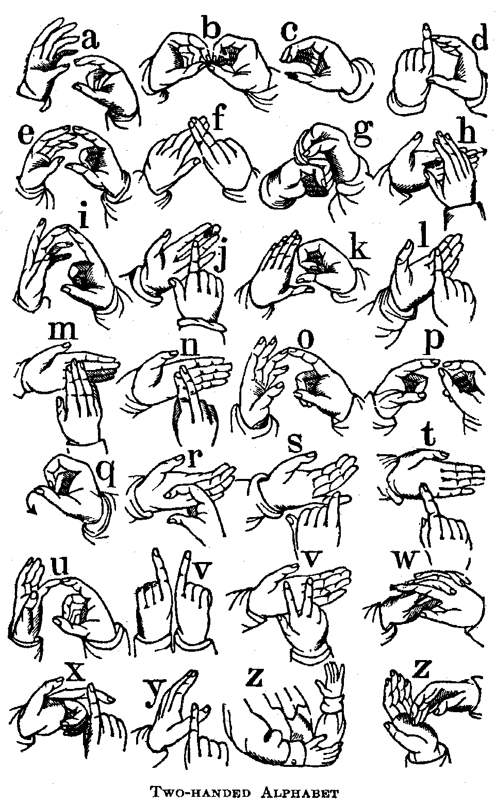
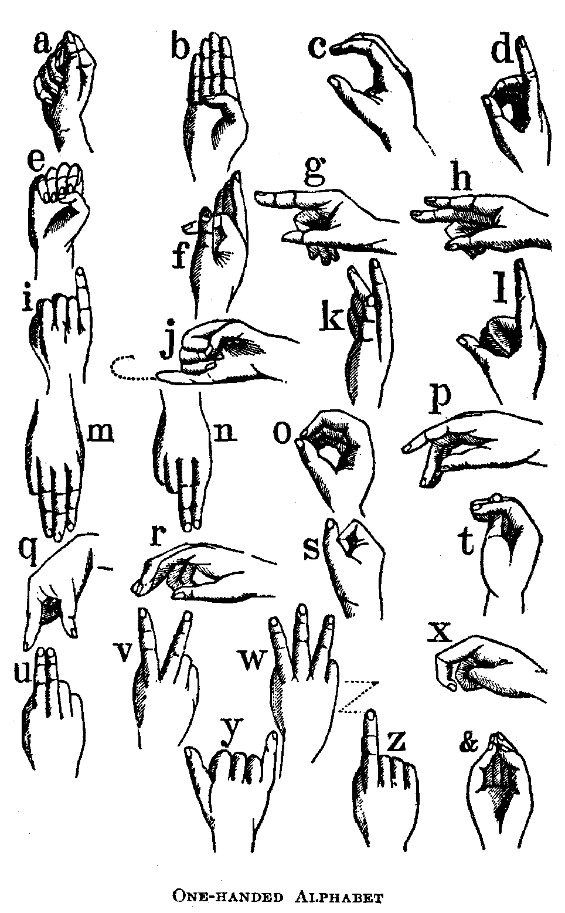

|
| A B C D E F G H I J K L M N O P Q R S T U V W X Y Z |
Education essentially includes the process of encouraging, strengthening, and guiding the faculties, whether of mind or body, so as to make them fit and ready instruments for the work they have to do; and, where the need exists, it must include, moreover, the awakening for the first time into activity and usefulness of some faculty which, but for the awakening, might remain forever dormant. As regards intellectual development, the deaf individual is the most handicapped of the afflicted class. The term "deaf and dumb", so frequently applied to that class of individuals who neither hear nor speak, is becoming obsolete among the educators of the deaf, as it implies a radical defect in both the auditory and the vocal organism. Persons who are born deaf, or who lose their hearing at a very early age, are unable to speak, although their vocal organs may be unimpaired. They become dumb because, being deprived of hearing, they are unable to imitate the sounds which constitute speech. To correct the error involved in the term dumb, it is customary to speak of human beings who do not hear and speak as deaf-mutes, a term which implies that they are silent, but not necessarily incapable of speaking. Brute animals that are deaf, are deaf and dumb; the little child, before it has learned to speak, is mute, but not dumb. There are found individuals who can hear, but cannot speak. To such may be applied the term dumb, inasmuch as they are either destitute of the power of speech or are unwilling to speak and are lacking in intelligence. Such children are generally found to be more or less idiotic. On account of the great progress made, especially during the last century, in the education of deaf-mutes, by which a large percentage are taught to speak, the term mute is also omitted when speaking of matters pertaining to that class formerly designated as "deaf and dumb". Institutions for them are named preferably "Schools for the Deaf", and in the literature of the subject they are spoken of simply as the "deaf", e.g. "The Annals of the Deaf", etc. Here it is well to remark, that there is a strong and growing objection among the deaf and their educators to calling their institutions asylums — a term which classifies them with unfortunates needing relief and protection, like the insane. In fact, Webster, under the word "Asylum", classes the deaf and dumb with the insane. Efforts are consequently being made to place such institutions under the control of educational rather than of charity boards.
That there were deaf persons in the remote past is evident from the fact that the causes of deafness, such as disease, were as prevalent then as now. Before the Christian Era, their condition was deplorable. By many they were considered as under the curse of heaven; they were called monsters and even put to death as soon as their deafness was satisfactorily ascertained. Lucretius voices the received opinion that they could not be educated: —
Greek and Roman poets and philosophers classified them with defectives, and the Justinian Code abridged their civil rights. In the family they were considered a disgrace, or were looked upon as a useless burden and kept in isolation. It is a bright page in the New Testament which narrates the kindness of our Divine Lord, who, doing good to all, did not forget the deaf and dumb. After His example, the Church has extended its charity to this afflicted class, and has led the way in opening up for them other channels of thought in place of the hearing faculty. The statement met with in literature connected with the education of the deaf, that the real history of deaf-mute instruction must be considered as dating from the Reformation, is the old fallacy of post hoc ergo propter hoc. The fact is, that not a few of the more famous educators of the deaf received their first lessons from those who preceded the Reformation or were not influenced by its errors, but undertook the instruction of deaf-mutes for the sole purpose of imparting religious instruction. No Catholic theologian maintained that the adult deaf and dumb from birth are beyond the pale of salvation, because "Faith cometh by hearing" (Romans 10:17). The assertion is often made, without references being given, that St. Augustine held such an opinion. Although the great doctor may have held the opinion of his time, that the deaf could not be educated, he certainly did not exclude them from the possibility of salvation any more than he excluded pagans to whom the Gospel had not yet been preached.
That the deaf are very much handicapped, even in our time, as regards religious instruction, so necessary for the preservation of faith and morals, must be admitted. Many deaf-mutes born of Catholic parents have lost the Faith, owing to a lack of Catholic educational facilities. Moreover, they are deprived of the usual Sunday instructions and sermons. There are in the United States few priests engaged in ministering to their spiritual welfare, and such as have taken up this apostolate are not at leisure to devote their whole energy to the work. On the other hand, Protestant ministers travel through the length and breadth of the land and in their monthly itineraries assemble the deaf for religious services. There can be no doubt that from the dawn of Christianity the deaf enlisted the sympathy and zeal of many priests and missionaries who, by various ingenious devices suited to the occasion, taught them the essential truths of faith: but history has left meagre records of their good work. According to Venerable Bede, St. John of Beverley (721) caused a deaf and dumb youth to speak by making the sign of the cross over him; and Bede himself, in his "De Loquelâ per gestum digitorum", describes a manual alphabet. Rudolph Agricola, the distinguished humanist (1443-1485), states that he saw a deaf and dumb man who was able to converse with others by writing (De inventione dialecticâ, III, xvi). Ponce de Leon (1520-1584), a Spanish Benedictine monk, undertook the education of several deaf-mutes, as is related in the accounts of his work discovered among the archives at Oña. He relates that he taught pupils who were deaf and dumb from birth to speak, to read, to write, and to keep accounts, to repeat prayers and to confess orally. He first taught his pupils to write the names of objects and then to articulate. A contemporary writer, Francesco Valles, says that Ponce de Leon's method proved that, although we learn first to speak and then to write, the reverse order answers the same purpose for the deaf. It is highly probable that he was led to undertake the instruction of the deaf and dumb by the principle announced by Girolamo Cardano (1501-1576), a friend of St. Charles Borromeo, that "writing is associated with speech, and speech with thought, but written characters may be connected together without the intervention of sounds. The deaf can hear by reading, and speak by writing." About fifty years later, Juan Pablo Bonet, a Spanish priest, published a treatise entitled, "Reduccion de las Letras y arte para Enseñar a hablar los Mudos" (Madrid, 1620). He made use of a manual alphabet, invented a system of visible signs representing to the sight the sounds of words, and gave a description of the position of the vocal organs in the pronunciation of each letter. His work contains many valuable suggestions useful to modern teachers of articulation and lip-reading.
St. Francis de Sales, having on his missionary journeys met a deaf-mute, took him into his service and succeeded in establishing communication with him by signs, and prepared him for confession and Holy Communion. The celebrated Jesuit naturalist and physician, Lana Terzi (1631-1687), in his "Prodromo dell' Arte Maestra", considers the education of the deaf, which, according to him, consists in their "first learning to perceive the dispositions of the organs of speech in the formation of sounds, and then imitating them; and recognizing speech in others by lip-reading. To that end they should first utter each sound separately, read it on the lips of another, then join them in words; next they should be taught the meaning of these words by being shown the objects signified, and gradually be made acquainted with the meaning of those which relate to the functions of the senses, the arts, the understanding and the will" (Arnold). Lorenza Lorenzo Hervás y Panduro (1735-1809), a celebrated Spanish philologist and missionary in America, took an active interest in the education of the deaf in Rome and published a learned work in two volumes entitled "Escuela Española de Sordo-mudos, o Arte Para Enseñarles a Escribir y Hablar el Idioma Español" (Madrid, 1795). The work consists of five parts, "the first dealing with the deaf in the political, physical, philosophical, and theological aspects of the subject and the linguistic questions it gives rise to; the second is a history of their education up to that time, which is the first complete account written; the third explains the practical method of teaching idiomatic language by writing; the fourth that of teaching speech; and the fifth is on the instruction of the deaf in metaphysical ideas and in moral and religious knowledge" (Arnold).
Among other writers in the interest of the education of the deaf and dumb must be mentioned John Bulwer (1645); Deusing (died 1666), who in his writings recommends writing, signs, and, on occasion, lip-reading as the helpful instruments in the education of the deaf; William Holder (1616-1698), and his contemporary, John Wallis (1616-1703); George Dalgarno (1626-1687), of Aberdeen, Scotland, who published, in 1661, "Ars Signorum" and, in 1680, "Didascalocophus" (or "Deaf and Dumb Man's Tutor"), and devised a double-handed alphabet; Baron Von Helmont (1618-1699); John Conrad Amman (1669-1724), a native of Schaffhausen, Switzerland, who published (1700) "Dissertatio de Loquelâ", in which are described the means by which the deaf and dumb from birth may acquire speech.
Although Germany cannot claim originality in the field of the education of the deaf and dumb, several works published in other countries were translated into German, and their teachings put in practice. Among the earliest to take up this work were Kerger (1704), Raphel (1673-1740), Lasius (1775), and Arnoldi (1777). The first public institution for the deaf in Germany was established by Samuel Heinicke (1729-1790), the great advocate of the oral method of instruction, which has generally been followed in German schools for the deaf. To Friedrich Moritz Hill (1805-1874), regarded as one of the greatest teachers of the deaf, is due what is distinctively called the "German System", which has found an able critic in J. Heidsiek, of the Breslau Institution for the Deaf, in a work entitled "Der Taubstumme und seine Sprache". Jacob Rodriguez Pereire (1715-1780), a Portuguese Jew, gave an exhibition of his skill in teaching the deaf before the Academy of Science in Paris. "His efforts were confined to a privileged few, and, from this circumstance, as well as his keeping his methods secret, his work, unlike de l'Epée's, had no lasting effect upon the deaf as a class" (Arnold). Abbé Deschamps, of Orléans, devoted his life and fortune to the education of the deaf-mutes and, in his instructions, relied chiefly on reading and writing together with speech and lip-reading.
Up to the middle of the eighteenth century, it was believed that speech was indispensable to thought. The practical utility of pantomime had not been fully shown before the days of Abbé Charles-Michel de l'Epée (1712-1789), the father of the sign-language and founder of the first school for the deaf. The deplorable condition of the two deaf-mutes whom he chanced to meet on one of his missionary errands excited his compassion and awakened in him zeal for their religious instruction. He discovered others of the same class, especially among the poor, and to these he devoted his time and fortune. In his first attempt to teach his silent pupils he tried the method of pictures used by Père Vanin before him; but, finding this method unsatisfactory, he tried the articulation method, which he found discouragingly slow. Noticing, as every instructor of the deaf has noticed, that deaf-mute children, even before having received instruction from anyone, will, at play and at other times, communicate with each other in pantomime and make use of certain natural gestures indicative of objects, their quality and action, he came upon the idea of using a sign-language as the means of instruction. Since words are conventional signs of our ideas, why could not conventional gestures be signs of ideas? He concluded that the natural language of signs, which the deaf-mutes themselves invent, would be of great service in their instruction. He accordingly made himself familiar with the few signs already in use and added others more or less arbitrary. He opened a school for deaf-mutes in Paris, about 1760, which soon won international fame. De l'Epée died in 1789, leaving as his successor the Abbé Sicard, who made important improvements in the system of de l'Epée. At about the same time a school for the deaf was opened by Samuel Heinicke at Dresden, which was afterwards removed to Leipzig, and another by Thomas Braidwood, at Edinburgh. The successful results obtained in these schools prompted other cities and countries to establish similar ones under the direction of persons trained by de l'Epée, Heinicke, or their disciples.
In Italy the first school for the deaf was established in 1784 at Rome, by the Abbate Silvestri, a disciple of Abbé de l'Epée. Among other Italian educators must be mentioned Tommaso Pendola (1800-1883) and his brilliant associate, Enrico Marchio; Abbate Balestra and Abbate Giulio Tarra (1832-1889), who acted as president at the Milan International Congress in 1880 and saw his most cherished ideas regarding oral teaching practically approved by the resolutions that were adopted, and which hastened the progress of oral teaching, especially in France.
Francis Green, a native of Boston, 1742, whose son was a deaf-mute, was the earliest advocate of deaf-mute education in America. In his "Vox Oculis Subjecta", published in London, 1783, he describes the method by which the deaf-mute may be taught to speak. In about 1812, John Braidwood, Jr., a grandson of the founder of the Edinburgh school, attempted to establish schools in Virginia, New York, and Baltimore, but failed. "The immediate effects", says the "History of American Schools for the Deaf" (I, 10), "was to hinder and delay the opening of the first permanent school; for the members of his family in Great Britain, who controlled the monopoly of deaf-mute instruction in America, placed obstacles in the way of Dr. Gallaudet, when he sought to acquire the art of instruction in the mother country." An exceptionally large number of deaf-mutes having been found in the State of Connecticut by Dr. M. F. Cogswell, whose daughter was deaf, a corporation of several gentlemen was enlisted for the purpose of establishing a school at Hartford, under the care of Dr. Thomas Hopkins Gallaudet. For the purpose of mastering the art of instructing the deaf, Dr. Gallaudet sailed for England; but the exorbitant and humiliating terms imposed by the Braidwood-Watson family, which held the monopoly of the art, repelled him. Happening to meet Abbé Sicard, who with his pupils was visiting London, he accepted an invitation to visit the school in Paris. Here he received every assistance. The abbé gave him several hours of instruction every week and generously allowed Laurent Clerc, one of his distinguished pupils and valuable associates, to accompany him on his return to America. In the contract drawn up between Dr. Gallaudet and Laurent Clerc, it is stipulated (article 11): "He [Laurent Clerc] is not to be called upon to teach anything contrary to the Roman Catholic religion", and in his letter to Bishop Cheverus of Boston, Abbé Sicard writes: "The extreme desire to procure for the unfortunate deaf-mutes of the country in which you dwell, and fulfill so well the mission of the Holy Apostles, the happiness of knowing our holy religion, leads me to a sacrifice which would exceed human strength. I send to the United States the best taught of my pupils a deaf-mute whom my art has restored to society and religion. He goes fully resolved to live and be faithful to the principles of the Catholic religion which I have taught him." Notwithstanding the kind solicitude of his beloved master, Laurent Clerc, like so many other deaf-mutes deprived of constant religious instruction, in his surroundings weakened in the Faith and apostatized. The, kindness of Abbé Sicard only served to lay the foundation of a Protestant propaganda which, ever since the opening of the Hartford School founded by Dr. Gallaudet, has controlled the education of the deaf in America. This Hartford School, then known as the American Asylum, was opened 15 April, 1817, under the superintendency of the Rev. Dr. Gallaudet, whose two sons, the Rev. T. Gallaudet and E. M. Gallaudet, have been active in the cause of deaf-mute education. The latter was the founder of the Columbia Institution for the Deaf and Dumb at Washington, D. C., which was opened 13 June, 1857. Later on, in 1864, it developed into a school for the higher education of the deaf under the name of the National Deaf-Mute College. Connected with the college is a normal department for the training of teachers for the deaf. A course of studies leading up to entrance into the National Deaf-Mute College may be found in the "American Annals of the Deaf" for November, 1907. As regards higher education and normal-school practice, opportunities are also afforded by the Catholic deaf-mute schools in the State of New York.
When the Abbé de l'Epée originated the method of signs, many of his contemporaries, such as the Abbé Deschamps, refused to be associated with the new school, and between him and Samuel Heinicke of Leipzig, the great upholder of the speech method, there was carried on a spirited controversy, which has continued ever since, among the educators of the deaf. Professor E. A. Fay, in the "American Annals of the Deaf", gives the following classification and definition of the methods used in the schools for the deaf: —
Some educators of the deaf employ the method of visible speech, which is a species of phonetic writing: symbolizing the movements of the vocal organs in the production of speech. There is also a phonetic manual in which the several positions of the hand not only represent various speech sounds, but also indicate concisely the way in which the represented sound is, physiologically or mechanically produced (see Lyon, "Phonetic Manual", Rochester, New York, 1891). Whipple, in his "Phonetic Manual", endeavours to depict the positions taken by the visible organs, the teeth, lips, tongue, and palate, in the production of sound.
It is beyond the scope of this article to discuss the merits of the various methods in use. A teacher of the deaf cannot lose sight of the fact that in the term deaf, or deaf-mute, there are included at least four sub-classes, namely, the semi-mutes, who have lost their hearing after they had acquired more or less perfectly the use of language; the semi-deaf, who retain some power of hearing, but yet cannot attend with profit schools for hearing children; the congenitally deaf, possessing some ability to perceive sound; and the totally deaf from birth, who are unable to perceive sound. A teacher of hearing children may take for granted, if the class is properly graded, that all his pupils are on the same plane; but a teacher of the deaf, whose pupils may be only four in number, may have before him, even in the lowest grade, as many different kinds of deaf children as there are pupils in the class. These he must instruct and educate. Considering that the deaf child is very much handicapped, and that the period of its school-days are limited, it is reasonable to suppose that a good teacher will take advantage of every latent power possessed by the child for educational development. In a word, the teacher will suit the method to the child and not endeavour to adapt the child to the method. It would certainly be a mistake to use the purely oral method for all deaf-mutes without discrimination and without considering the capacity, eyesight, etc. of the pupil.
For the purpose of diffusing knowledge relative to the education of the deaf, there has been established, through the benefactions of Dr. Alexander Graham Bell, the Volta Bureau, Washington, D.C. Here are collected items of interest in the educational work for the deaf. Under John Hitz, its first superintendent, it received international development. In this way it has been possible to compile and diffuse international statistical information concerning institutions and work for the deaf throughout the world. Its publications are distributed gratuitously or by exchange. Among the publications of the Volta Bureau is an historical account of all the schools for the deaf in the United States in three volumes, edited by Dr. E. A. Fay. As an incentive to the educational work for the deaf, and as a means of collating the opinions of those interested, there are about thirty-two periodical publications in Europe and more than sixty in America dealing with questions concerning the deaf. The oldest among the latter, "The American Annals of the Deaf", edited by Dr. Fay, is eclectic in its character and as such is the organ of the combined system of instruction. For the diffusion of the oral method there was founded, in 1899, at Philadelphia, a special periodical, "The Association Review", published by the "American Association to Promote the Teaching of Speech to the Deaf". Among the efficient agencies for the promotion of educational work for the deaf must be numbered the meetings, congresses, and conferences of superintendents and teachers of the deaf, and of the deaf themselves. The oldest organization of the kind is the "Convention of American Instructors of the Deaf" which met for the first time in New York in 1850, and for the sixteenth time in 1901, at the Le Couteulx, St. Mary's Institution for the Improved Instruction of Deaf Mutes, Buffalo, as the guests of the Sisters of St. Joseph.
There are also annual meetings of the "Association to Promote the Teaching of Speech to the Deaf"; meetings of principals and of the Department of Special Education of the National Association of American Teachers. At the invitation of the Right Rev. D. J. O'Connell, Rector of the Catholic University of America, all persons interested in the education of Catholic deaf-mutes met in July, 1907, at Milwaukee, simultaneously with the Catholic Educational Association, and organized the Catholic Deaf-Mute Conference. The conference is a powerful factor in enlisting the cooperation of bishops, priests, and laymen in ameliorating the educational condition of the Catholic deaf. The deaf themselves, also, at stated times, hold State and national conventions. Such meetings are carried on in the sign language, which, because visible to a large audience, is best adapted for public addresses, sermons, etc. Whenever at these meetings the deaf touch upon educational topics, they take occasion to manifest their strong protest against pure oralism in the schools, and their unequivocal adherence to the sign-language and the combined system of education. In the United States deaf-mutes are entitled to a share in the school fund, and special boarding and day schools are provided for them. Most of the institutions are controlled by trustees appointed by the State. The term of instruction is from seven to twelve years.
According to the subjoined statistics, compiled from the "American Annals of the Deaf" for 1907, there are 60 public State schools, 60 public day-schools, and 17 denominational and private schools, making in all 139 schools for the deaf in the United States having an attendance of 11,648 pupils — 6317 boys and 5331 girls — 1552 instructors — 471 men and 1081 women. Out of the total number of 139 schools for the deaf, there are 13 Catholic schools with the following enrolment: St. Joseph's School for the Deaf, Oakland, California, 39; Ephpheta School for the Deaf, Chicago, Illinois, 72; Institute of the Holy Rosary, Chincuba, Louisiana, 37; St. Francis Xavier's School, Baltimore, Maryland, 35; Boston School for the Deaf, Randolph, Massachusetts, 93; Mater Boni Consilii School, St. Louis, Missouri, 40; St. Joseph's School, Longwood, Missouri, 20; Notre Dame School, Cincinnati, Ohio, 12; St. John's Institute, St. Francis, Wisconsin, 71; St. Joseph's Schools, 3, New York City, 417; Le Couteulx, St. Mary's School, Buffalo, New York, 176 — making in all 1002 deaf pupils in Catholic schools. It will be noticed that, in the four Catholic schools for the deaf in the State of New York, which has a deaf population of about 10,000, there are 593 children cared for; and that, in nine schools scattered throughout the remaining portion of the United States, where there is a deaf population eight times as great as that of the State of New York, only 409 are provided for. If all the States were as generous as New York in caring for its deaf children, there should be, if adequate facilities were provided, 4744 children in Catholic schools for the deaf outside of the State of New York.
With the exception of the New York institutions for the deaf, the other Catholic institutions are almost entirely dependent upon the charity of religious sisterhoods. Pupils of all denominations are admitted, the only requirements for admission being a sound mind and good morals. Good work has been done by these devoted sisters for Church and State, and their graduates are respected and self-supporting citizens; but, as they carry on their schools with little support from without, the number of pupils is necessarily small. The pupils are for the most part girls, and, because there is no male community in the United States as there is in Canada and Europe, to take charge of the deaf-mute boys, these are obliged, with very few exceptions, to attend State or public day-schools.
The celebrated school for the deaf at Cabra, near Dublin, Ireland, has two departments. The St. Joseph's School for boys is under the care of Christian Brothers and the St. Mary's School for girls is in charge of Dominican nuns. It was established in the year 1846 by Archbishop Murray of Dublin. The patrons of the institution are the archbishops and bishops of Ireland, the president of the management being the Archbishop of Dublin. Without government grant, the school has attained a foremost rank among educational institutions for the deaf. According to the report for May 1900, there were 518 pupils under instruction, — 260 boys and 258 girls. Industrial training suited to the age and capacity of the children, and so necessary for the deaf, forms an important part in the educational system of the school.
The institutions for the deaf in the United States during the last decade, show a marked increase in the number of day-schools. This is due to the strong influence of the defenders of the oral method, who, for their purpose, consider such schools superior to boarding-schools. The conscientious duty of Catholic parents to withdraw their afflicted children from State boarding-schools that have proved so dangerous to faith, has also influenced the establishment of day-schools. Until boarding-schools are provided, the day-school, notwithstanding its many inconveniences, is preferable for the Catholic deaf-mute child, so that it may not be deprived of religious home influence. Until 1870, the schools for the deaf established in the United States were almost entirely boarding-schools.
There are some individuals who are not only deaf but also blind, and not a few who are deaf, mute, and blind. Wonderful results have been produced in the education of this afflicted class during the last half-century, as is evidenced in the case of Laura Bridgeman, taught by Dr. Howe; Helen A. Keller, educated by Miss Annie Sullivan; Clarence Selby, poet and author, taught by Sister Dosithea of the Le Couteulx, St. Mary's Institution, Buffalo, New York, and Lottie Sullivan, educated by Mrs. G. W. Veditz of the Colorado School, and instructed for her first Holy Communion by the Sisters of St. Joseph in St. Louis. About forty more remarkable cases are known in the United States and Canada (see "American Annals of the Deaf", June, 1900). It is evident that a teacher of this class must be strong in the power of inventing means for the attaining of results, and of utilizing the unimpaired faculties as indirect ways of communication between the imprisoned soul and the outer world. Usually they are taught the manual alphabet, and made to understand that objects have names, and that by these names, recognized in raised print or by spelling on the fingers, objects can be designated. So delicate is their sense of touch that, like Helen Keller, they can, by feeling the movements of the vocal organs in the production of speech, be taught to speak and even to read the speech of others.
Venerable Bede (op. cit.) describes finger alphabets. Monks under rigid rules of silence often made use of them. Rosellius, a Florentine monk, in his "Thesaurus Artificiosæ Memoriæ" (1579), figures three one-hand alphabets which, with minor differences, were used by Bonet and Lorenzo Hervás y Panduro. The first alphabet used in teaching spoken and written language to the deaf was the Spanish one-hand alphabet of Rosellius. "The happy thought of this adaptation", says J. C. Gordon, "is attributed to the pious and learned monk, Pedro Ponce de Leon" (1520-1584). The two-handed alphabet, used in Great Britain, was in use centuries ago among the school-boys of Spain, France, and England. Manual alphabets have nothing to do with "signs" or the "sign-language". They constitute a manner of writing language by spelling words on the fingers. As a means of intercourse with the deaf, they are preferable to writing on paper, being more convenient and rapid.

For the sake of promoting the welfare of thousands of deaf persons, it is recommended to hearing persons to master this art, which is easily acquired.
According to the United States Special Census Report for 1900, there are in Continental United States 89,287 persons with seriously impaired powers of hearing. Of these 2772 are blind-deaf, 37,426 are totally and 51,861 partially deaf; 51,871 became deaf under the age of 20 and 37,416 in adult life; 46,915 are males and 42,372 females; 84,361 are white, and 4926 coloured.
There are on an average 1175 deaf to the 1,000,000 population in Continental United States. Considering that there are in this territory probably 15,000,000 Catholics it follows that, if conditions and causes are uniform, there are 17,625 Catholic deaf — 10,272 under the age of 20 and 7353 adults. Since deaf-mutism is common among the poor, it is probable that the number of Catholic deaf is much larger. The statistics for the schools for the deaf throughout the world may be tabulated as follows: —
| Schools | Teachers | Pupils | |
| Africa | 7 | 16 | 127 |
| Asia | 9 | 47 | 453 |
| Australia | 7 | 46 | 332 |
| Europe | 450 | 3152 | 25,821 |
| North America | 148 | 1790 | 12,784 |
| South America | 7 | 34 | 229 |
| Total | 628 | 5085 | 39,746 |

Reports received from fifty-three State schools in the United States having an aggregate attendance of 10,124 pupils, show the values of the grounds and buildings to be $13,370,576; expenditure for grounds and buildings, $605,027; expenditure for salaries and other expenses, $2,556,459, making a total expenditure of $3,161,486, or $312 average cost per capita.
Reports from forty-three public day-schools show expenditures for salaries and other expenses to be $96,014 for 788 pupils, or an average cost per capita of $122. Reports from three denominational and private schools show an aggregate expenditure of $20,649 for 135 pupils, that is to say, an average cost per capita of $152. The following tables give the statistics for the United States: —
| No. of In- stitutions | Men | Women | Total | Deaf | |
| State Schools | 60 | 452 | 855 | 1,307 | 265 |
| Public Day | 62 | 5 | 150 | 155 | 3 |
| Denominational and Private | 17 | 14 | 76 | 90 | 5 |
| Total in U. S. | 139 | 471 | 1,081 | 1,552 | 273 |
| Pupils in | During the Fiscal Year | Present 10 Nov., 1907 | Graduates 1905-06. | ||
| Boys | Girls | Total | |||
| State Schools | 11,008 | 5,563 | 4,542 | 10,105 | 238 |
| Public Day | 1,118 | 526 | 511 | 1,037 | 2 |
| Denominational and Private | 538 | 528 | 278 | 506 | 13 |
| In 139 Schools in U. S. | 12,664 | 6,617 | 5,331 | 11,648 | 253 |
American Annals of the Deaf, ed. FAY; The Association Review and The Reports of Summer Meetings, published by the American Association to Promote the Teaching of Speech to the Deaf; History of the American Schools for the Deaf, 3 vols., ed. FAY (Washington, 1893); VOLTA BUREAU (Washington), International Reports, Report of the U. S. Commissioner of Education (Washington, 1906); GORDON, Education of the Deaf, Notes and Observations (Washington, 1892). and also for manual alphabets; Cyclopedia of Education (New York, 1877); FERRERI, The American Institutions for the Education of the Deaf, tr. in the Association Review; GREEN, Vox Oculis Subjecta (London, 1783); Facts and Opinions Relating to the Deaf (London, 1888); MONROE, Bibliography of Education (New York, 1897).
APA citation. (1909). Education of the Deaf and Dumb. In The Catholic Encyclopedia. New York: Robert Appleton Company. Retrieved April 26, 2010 from New Advent: http://www.newadvent.org/cathen/05315a.htm
MLA citation. "Education of the Deaf and Dumb." The Catholic Encyclopedia. Vol. 5. New York: Robert Appleton Company, 1909. 26 Apr. 2010 <http://www.newadvent.org/cathen/05315a.htm>.
Transcription. This article was transcribed for New Advent by Douglas J. Potter. Dedicated to the Immaculate Heart of the Blessed Virgin Mary.
Ecclesiastical approbation. Nihil Obstat. May 1, 1909. Remy Lafort, Censor. Imprimatur. +John M. Farley, Archbishop of New York.
Contact information. The editor of New Advent is Kevin Knight. My email address is webmaster at newadvent.org. (To help fight spam, this address might change occasionally.) Regrettably, I can't reply to every letter, but I greatly appreciate your feedback — especially notifications about typographical errors and inappropriate ads.